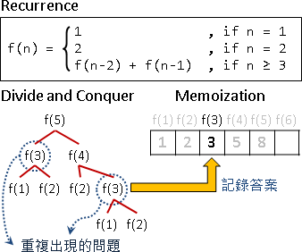

Dynamic Programming¶
What is Dynamic Programming?¶
Dynamic Programming (DP)，是一個在解題很常用的一種解題方式，原理是透過把原問題分解為相對簡單的子問題的方式，來求解複雜問題的方法。
DP 在尋找有很多 重疊子問題 的情況的最佳解時有效，當遇到複雜的計算且有規律的問題時，我們可以使用動態規劃來將問題分解成數個小問題，找到其中的規律，每次將小問題的答案 記錄 下來，當下一回來用到前一回合答案時就直接查表，也可以說是一種 用空間換取時間 的解題方式。
Dynamic Programming = Divide-and-Conquer Method + Memoization
把原問題遞迴分割成許多更小的問題。（recurrence）
子問題與原問題的求解方式皆類似。（optimal sub-structure）
子問題會一而再、再而三的出現。（overlapping sub-problems）
設計計算過程：
確認每個問題需要哪些子問題來計算答案。（recurrence）
確認總共有哪些問題。（state space）
把問題一一對應到表格。（lookup table）
決定問題的計算順序。（computational sequence）
確認初始值、計算範圍。（initial states / boundary）
實作，主要有兩種方式：
Top-down
Bottom-up
Example : Factorial¶
1 × 2 × 3 × ⋯ × N 。整數 1 到 N 的連乘積，稱為 N 階乘，數學表示方式為 N!
陣列的每一格對應每一個問題。設定第一格的答案，再以迴圈依序計算其餘答案。